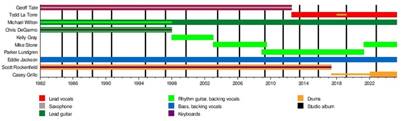
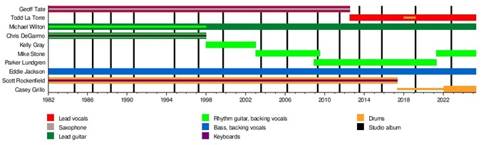

About Queensrÿche
Queensrÿche is an American progressive metal band formed in 1982 from Bellevue, Washington. The bands
original and most famous lineup consisted of guitarists Michael Wilton and Chris DeGarmo, drummer Scott
Rockenfield, bassist Eddie Jackson, and lead vocalist Geoff Tate. The band currently consists of Wilton
and Jackson alongside rhythm guitarist Mike Stone (from 2003 to 2008 and since 2021), lead vocalist Todd
La Torre (who replaced Tate in 2012) and drummer Casey Grillo (who has been touring with the band since
2017 and recording since 2020).
Some of their most iconic albums include "Operation: Mindcrime" and
"Empire," which have cemented their place in rock history.


 
